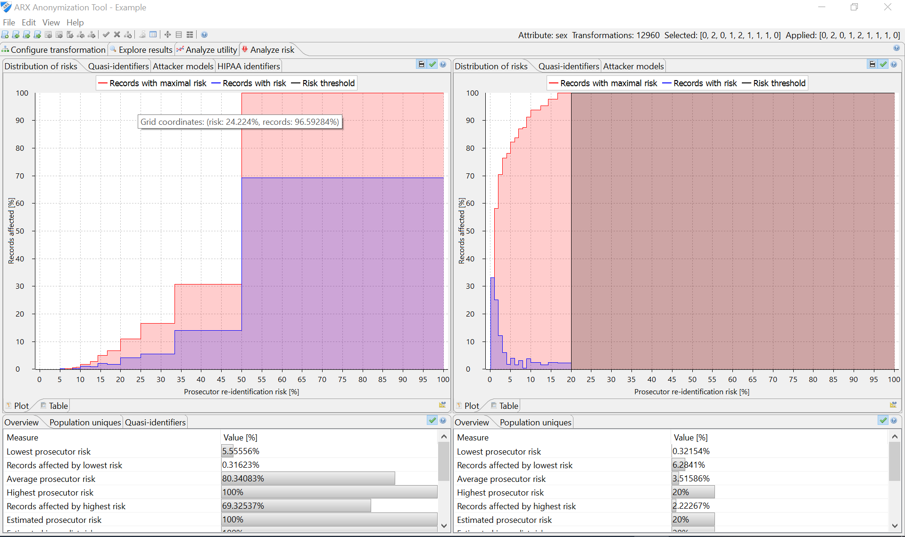

In this perspective, various metrics reflecting privacy risks are presented. Metrics implemented by ARX include re-identification risks for the prosecutor, journalist and marketer attacks as well as estimates of population uniqueness, which can be calculated using different statistical models. Moreover, the perspective also provides access to a method for detecting attributes which must be modified according to the Safe Harbor method of the US Health Insurance Portability and Accountability Act (HIPAA identifiers) and a method for detecting further quasi-identifiers.
